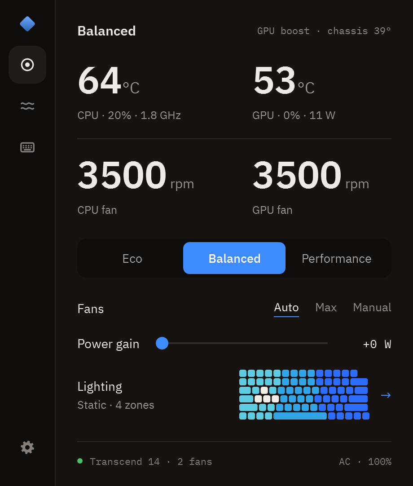
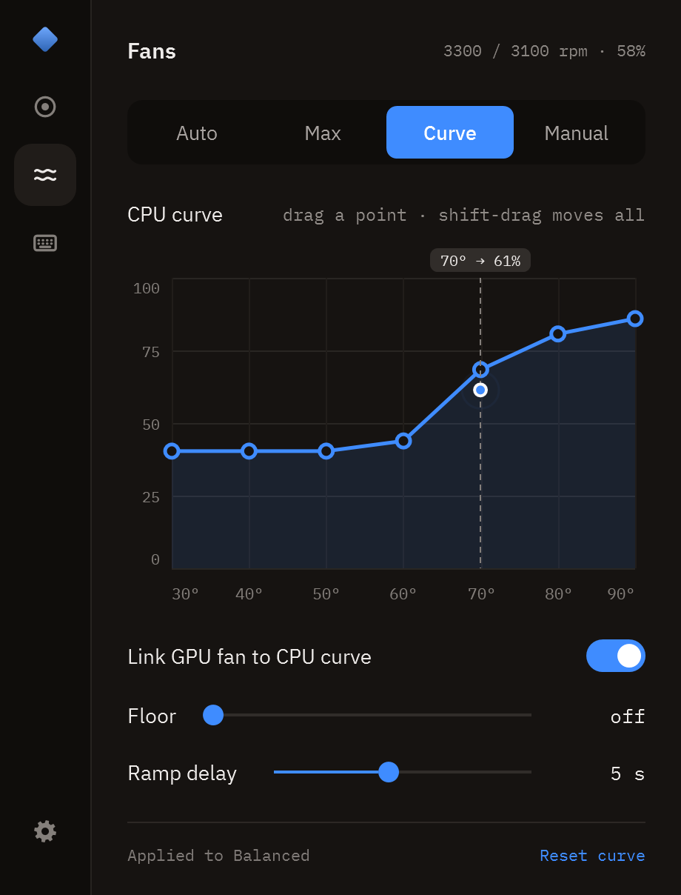
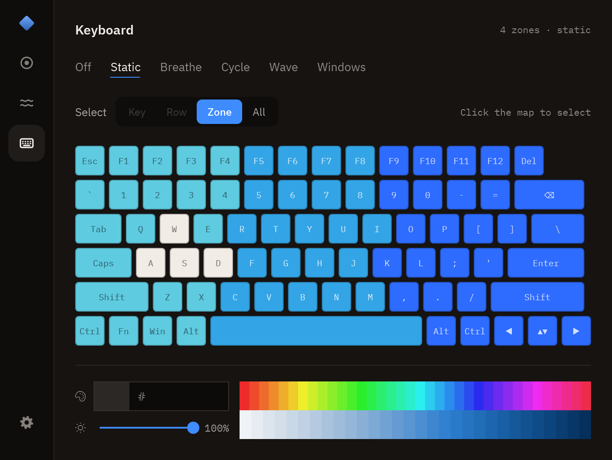
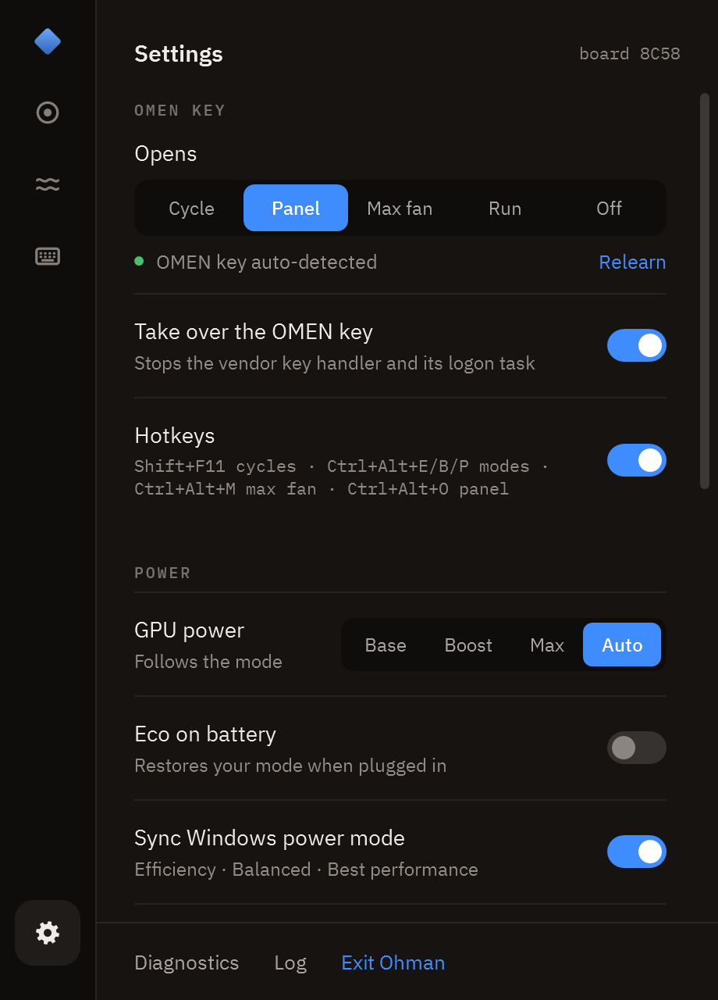

Ditch the hub.
Keep the control.
Modes, fan curves, power, graphics switching and keyboard lighting in one executable. Same firmware interface as OMEN Gaming Hub, same bytes. No services, no drivers, no account, no ads.

What it does
- Modes
- Eco · Balanced · Performance, one click, the OMEN key, or a hotkey. Each mode remembers its own fans, power gain and GPU choice, and the whole app takes that mode's colour.
- Fans
- Auto (this model's own curve), Max, Manual per fan, or your own curve: seven points you drag, a floor, a ramp delay, and a separate GPU curve if you unlink it. The live reading rides the curve so you can see what it is about to do.
- Max fan
- Full speed with a way back: it returns to Auto once the chips are below 60° for two minutes, or after 15, 30 or 60 minutes.
- Power gain
- OGH's "Smart Performance Gain": +0 to +15 W on the CPU+GPU budget that NVIDIA Dynamic Boost draws from.
- GPU power
- Base · Boost · Max, or follow the mode.
- Graphics
- Hybrid, Discrete (the MUX) or iGPU only, whichever your firmware offers. Written the way OGH writes it, with the restart it needs.
- Lighting
- The keyboard drawn as it actually lights. Pick a key, a row, a zone or the whole board, then a hue and a shade; or Breathe, Cycle, Wave, or hand it to Windows Dynamic Lighting. Per-key selection is there for the boards that have it.
- Display
- Refresh rate, and the lowest rate on battery if you want it.
- Live
- CPU and GPU temperature, package watts, fan speeds, load, clocks, chassis sensor, battery. CPU temperature on the tray icon.
- Tray
- Everything above without opening the window: modes, fan mode, power gain, refresh rate, GPU power, graphics, lighting, brightness and every switch.
- OMEN key
- Opens the panel, cycles modes, toggles max fan, or runs a command of your choice. OGH's key handler is stopped, reversibly.
- Safety
- A thermal guard forces max fan on a hot CPU, a hot chassis or stalled fans, and can be switched off. Fans are never set below 1800 rpm.
- Extras
- Starts with Windows without a UAC prompt, Eco on battery, Windows power mode sync, hotkeys, an on-screen flash when a key changes something, and an update check that never installs anything for you.



How it works
HP exposes a BIOS mailbox as the WMI class hpqBIntM. Ohman uses the commands OGH uses: performance mode, max fan, fan levels, CPU+GPU power budget, GPU power, graphics mode, keyboard lighting, plus read-only queries. The OMEN key arrives as a WMI event (hpqBEvnt). Every byte and every measured firmware behaviour is written down in docs/research.md.
- 0x1A mode
- 0x27 max fan
- 0x2E fan levels
- 0x29 power budget
- 0x22 GPU power
- 0x52 graphics mode
- 0x20009 lighting
One executable, with a settings file and a log beside it. To remove it, turn off Start with Windows and Take over the OMEN key first, then delete the folder: those two are the only things Ohman writes outside it.
Laptops
Every OMEN and Victus laptop is supported. Ohman asks the firmware what generation it is and drives it accordingly, hiding any control your firmware does not offer.
OMEN 15, 16 and 17 · OMEN MAX 16 · OMEN Transcend 14 and 16 · Victus 15 and 16, including the S and R
Note: so far Ohman has been verified end to end on one machine, an HP OMEN Transcend 14 (2024, board 8C58). Help get your laptop verified.
| Model | Board ids | Status |
|---|---|---|
| OMEN Transcend 14 (2024, 14-fb0xxx) | 8C58 | Verified |
| OMEN Transcend 14 (2024, other SKU) | 8E41 | Supported |
| OMEN 15 (2019, 15-dc / 15-dh) | 8574, 8600 | Supported |
| OMEN 17 (2019, 17-cb0) | 8603 | Supported |
| OMEN 15 (2020) | 8A15 | Supported |
| OMEN 15 / 17 (2021) | 8BAD | Supported |
| OMEN 16 / 17 (2021–2022) | 8A42, 8A43 | Supported |
| Victus 16 (2021–2023) | 88F8, 8A25 | Supported |
| Victus 16 S / R (2023–2024) | 8A3D, 8B2F, 8BBE, 8BD4, 8BD5, 8C99, 8C9C | Supported |
| OMEN 15 / 17, 2018–2021 generations | 84DA, 84DB, 84DC, 8572, 8573, 8574, 8575, 8601, 8602, 8603, 8604, 8605, 8606, 8607, 860A, 8746, 8747, 8748, 8749, 874A, 8786, 8787, 8788, 878A, 878B, 878C, 87B5, 886B, 886C, 88C8, 88CB, 88D1, 88D2, 88F4, 88F5, 88F6, 88F7, 88FD, 88FE, 88FF, 8900, 8901, 8902, 8912, 8917, 8918, 8949, 894A, 89EB | Supported |
| OMEN 16 (2023–2025) | 8BAA, 8BAB, 8BCA, 8BCD, 8D24, 8D26, 8D2F, 8E35 | Supported |
| OMEN MAX 16 (2025) | 8D41, 8D87 | Supported |
| OMEN Transcend 16, OMEN 17 (2025) | 8BB3, 8C3B, 8C4D, 8E10 | Supported |
| Victus 15 | 88D9, 88DA, 8A3E, 8C2F, 8C30, 8C3F, 8D07, 8DCD, 8E5E | Supported |
Your board id is in Ohman under Settings, or from wmic baseboard get product. A board that is not in this table still runs, and most of the boards in it have no entry of their own either: Ohman asks the firmware what it is and uses what it answers. The table is a reading aid, not the list of what the code knows.
Verify yours
Five minutes, and it is the most useful thing you can contribute. Check that each mode changes the fans, that the
fan modes do what they say, and that nothing is stuck after you exit. Then run tools\support-info.cmd and open a
Verify my laptop issue with the file it writes.
Your model moves to verified and everyone with that board gets the tested profile.
If something is wrong on your model
- Run the support-info tool and press the OMEN key when it asks.
It writestools\support-info.cmdtools\support-info.txt: model, board id, BIOS, system-design data, fan table, key event. No personal data. - Open a New laptop support issue with that file, what OGH shows on your model, and ideally OGH's own log (
%LOCALAPPDATA%\Packages\AD2F1837.OMENCommandCenter_v10z8vjag6ke6\LocalCache\Local\HPOMEN\) from a session where you clicked every mode. - A laptop is one entry in src/Platform.cs. Nothing else in the app is model-specific.